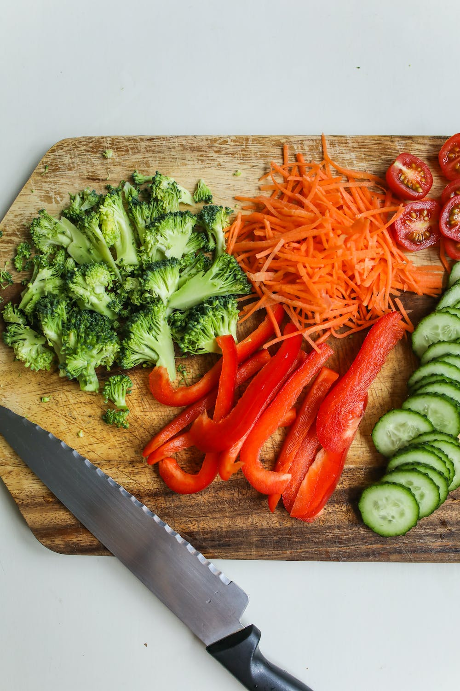
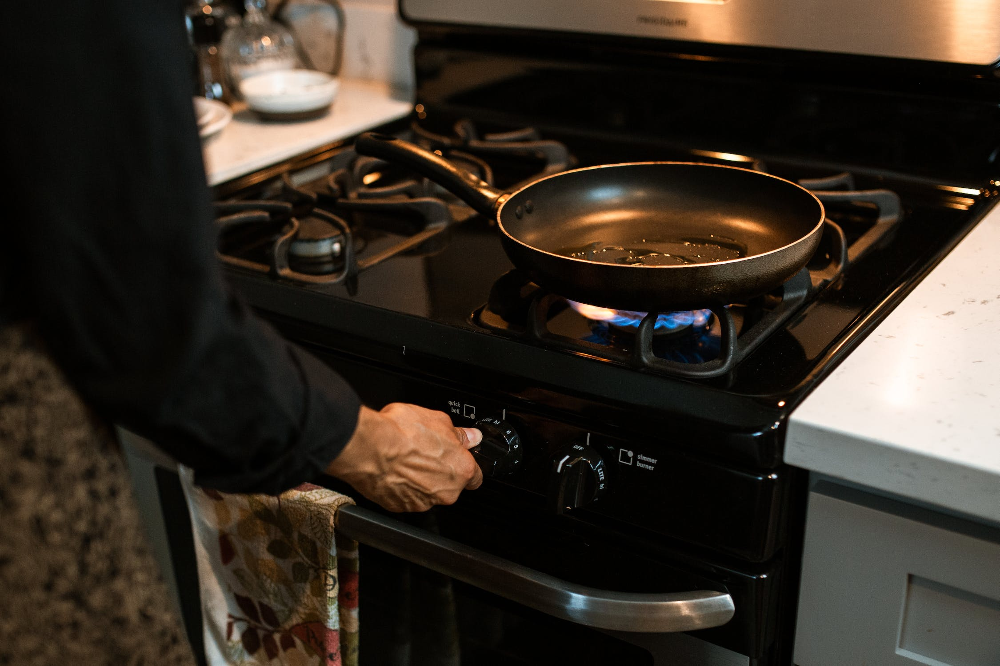
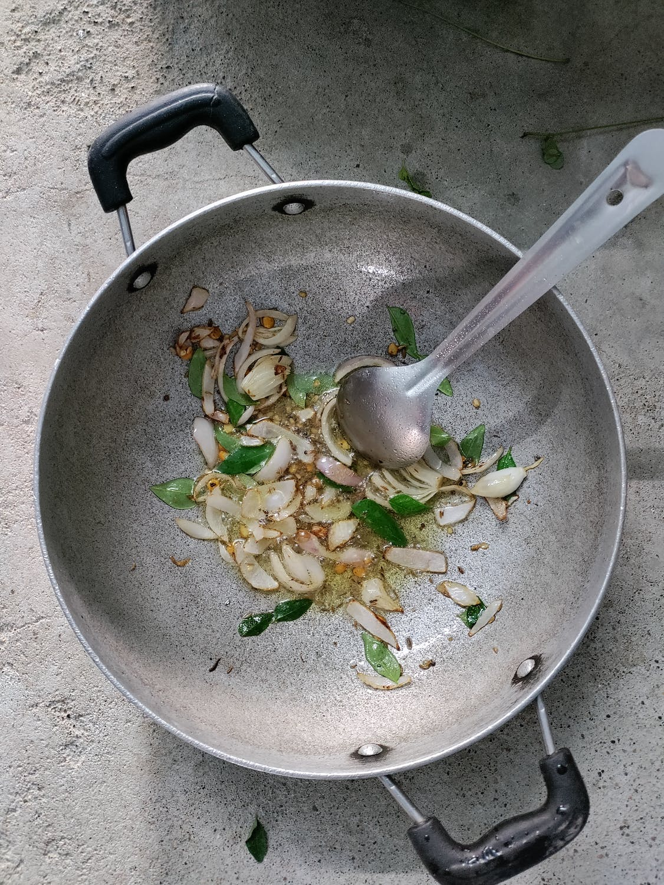

2 tablespoons chopped Spring Onion (or normal onion)
2 teaspoons minced Garlic
1/3 cup chopped Carrots
1/3 cup chopped Green Cabbage
1/3 cup Sweet Corn Kernels
1/3 cup chopped French Beans
1/4 teaspoon Ground Black Pepper
1/2 tablespoon tablespoon Vinegar
2 tablespoons Cornstarch (white corn flour)
1/2 tablespoon Butter or Oil
2½ cups Water or Vegetable Stock
Salt to taste
Directions
Chop all the veggies (carrot, cabbage, french beans, onion and garlic) into small pieces as shown in the
picture.

Add 2 tablespoons cornstarch (corn flour) in a small bowl.
Add 3 tablespoons water and mix well.
Heat 1/2 tablespoon oil or butter in a large, heavy bottomed stockpot over medium flame. Add chopped onion
and
garlic.

Sauté(cook until it starts turning brown) for 1-2 minutes.

Add carrots, cabbage, sweet corn kernels, french beans and salt (only for veggies).
Stir and cook for 3-4 minutes
Add 2½ cups water or vegetable stock. Stir well and bring the mixture to a boil. When it starts boiling, add
salt (add as required as we have already added salt for veggies).
Add black pepper powder.
Add cornstarch-water mixture and stir continuously for a minute to prevent lump formation.
Stir and cook until mixture turns thick and no raw smell of cornstarch. It will take around 7-8 minutes. Add
vinegar and mix well.
Taste the soup for the seasonings at this stage and add more if required. Turn off the flame. Transfer hot
soup of vegetables into individual serving bowls and serve.